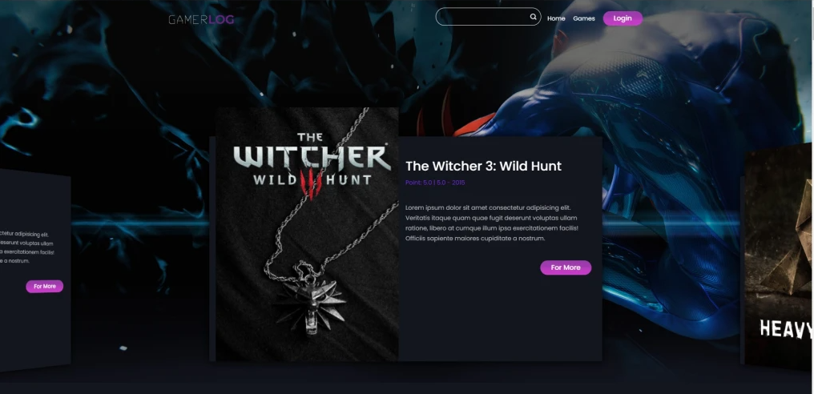
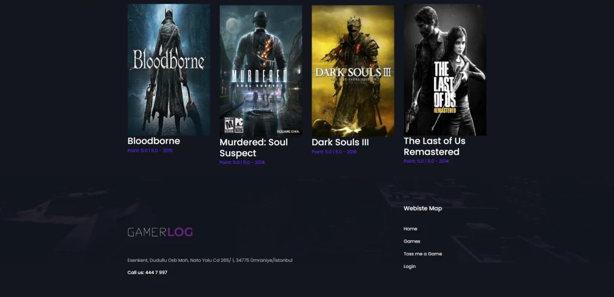
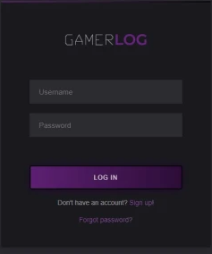
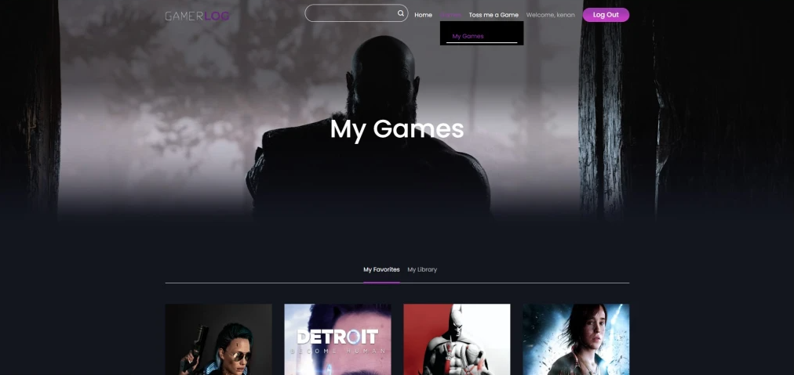
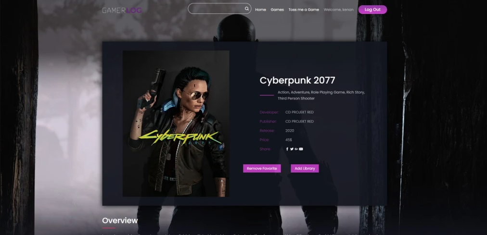
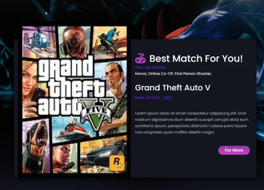
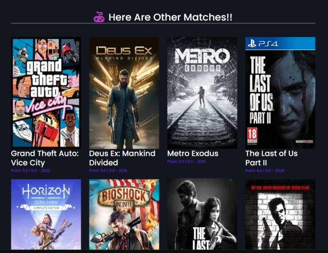

GAMERLOG
Grad Project: AI-Powered Game Recommendations







ABOUT THIS PROJECT
GamerLog is a Django-based platform where players build a visual game library, rate & review titles, and get personalized recommendations powered by the Surprise library. From your profile, the Toss Me a Game button suggests smart picks based on what you've played and liked.
KEY FEATURES
- Personal collections: curate your library with covers, ratings, and notes.
- Smart discoverability: recommendations from collaborative filtering on your activity.
- Social-ready: future-friendly for sharing collections and exploring others' shelves.
ARCHITECTURE & ENGINEERING
Architected a comprehensive data-processing ecosystem integrating real-time data feeds, algorithmic recommendation logic, and scalable cloud infrastructure.
Engineered robust recommendation systems across vast datasets using predictive models like Matrix Factorization and KNN classification, paired with efficient data manipulation in NumPy. Operationalized the full stack with seamless AWS integrations, automated data extraction pipelines, and GPT-powered conversational handlers.
Successfully delivered a highly scalable, cloud-deployed logic engine capable of synthesizing dynamic and personalized recommendations from complex and unstructured inputs.